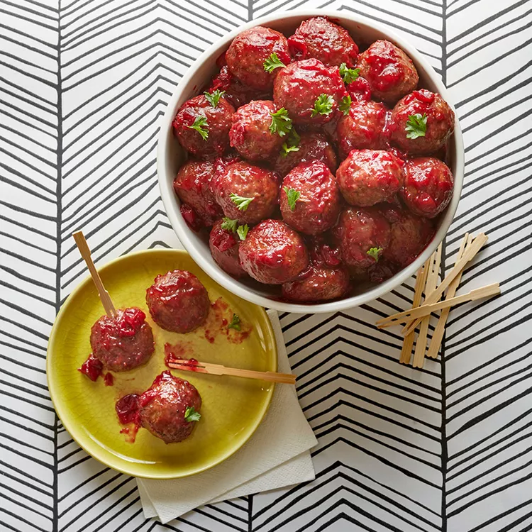

Slow Cooker Meatballs

Description
This is a fantastic recipe for parties. These meatballs are always a favorite, and there is never a single one leftover at the end of a party. The best part is that they are very easy to make!
Ingredients
- 1 (2lb) bag of frozen meatballs
- 1 (14.5 ounce) can whole berry cranberry sauce
- 1 (12 ounce) bottle tomato based chili sauce
- 1/2 lemon, juiced
- 2 drops hot sauce
Steps
- Place frozen meatballs into a slow cooker. Add cranberry sauce, chili sauce, lemon juice, and hot sauce. Stir to distribute sauce evenly over meatballs.
- Cook on High until meatballs are completely thawed and hot, about 3 hours.